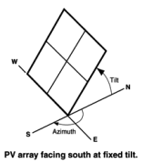
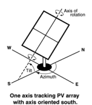
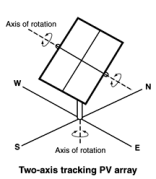
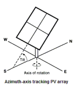
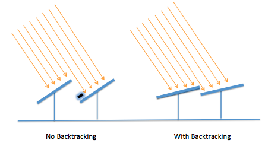
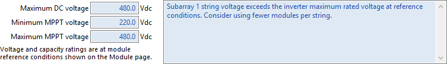

Use the System Design variables to size the photovoltaic system and choose tracking options. If your system includes battery storage, configure the battery bank on the Battery Storage page.
Notes.
See PV Sizing and Configuration for configuration examples and sizing tips.
Run the System Sizing macro to generate a report to help you ensure the system is sized correctly.
SAM can only model systems with one type of module and one type of inverter.
Choosing an appropriate module and inverter for your system depends on many factors, some of which are outside of the scope of SAM. Finding the right combination of inverter and module to model for your system in SAM will probably require some trial and error and iteration.
Reference conditions depend on the conditions used to define the parameters on the Module page. For the Sandia and CEC module models, reference conditions are 1,000 W/m² incident radiation and 25ºC cell temperature
Basic Sizing Steps:
1.Choose a module and inverter.
2.Type a value for Number of inverters under AC Sizing.
3.For each subarray in the system, type a value for Modules per string in subarray, ensuring that the string's rated open-circuit voltage (Voc) does not exceed the inverter maximum MPPT voltage rating.
4.For each subarray, type a value for Number of strings in parallel to achieve the desired DC to AC ratio.
Alternatively, if you are modeling a system with one subarray, you can have SAM attempt to size the array automatically by clicking Estimate Subarray 1 configuration and entering a desired array size and DC to AC ratio.
AC Sizing
The AC Sizing inputs determine the AC rating of the system.
Number of inverters
The total number of inverters in the system. The number of inverters determines the total AC capacity.
SAM assumes that all inverters operate at the same voltage. This effectively assumes that for systems with multiple inverters, the inverters are connected in parallel so that the system's MPPT voltage limit ratings are the same as those of a single inverter.
Note. If you are modeling a system with microinverters, see Modeling Microinverters for instructions. For systems with multiple power point trackers, see Systems with Multiple Power Point Trackers.
DC to AC ratio
The ratio of total inverter DC capacity to total AC capacity. This is a value that SAM calculates and displays for reference.
High DC to AC ratios may result in inverter power clipping.
Estimate Subarray 1 configuration
This option allows you to type a desired value for the system nameplate capacity and a desired DC to AC ratio. When you check this option, for Desired Array Size, type the DC capacity, and for DC to AC Ratio, type the ratio of nameplate capacity (DC kW) to total inverter capacity (AC kW) you want for your system.
SAM calculates the number of modules and inverters to get as close as possible to the desired size. Use this option for a rough estimate of an array layout. For a more about sizing the system, see PV Sizing and Configuration.
Note. The desired array size and DC to AC ratio is likely to be different from the actual nameplate capacity and DC to AC ratio because the desired array size is typically not an even multiple of the module capacity.
Sizing Summary
The sizing summary variables are values SAM calculates based on the inputs you specify. Use these values to verify that the system is sized correctly.
Nameplate DC capacity, kWdc
The maximum DC power output of the array at the reference conditions shown on the Module page:
Nameplate Capacity (kWdc) = Module Maximum Power (Wdc) × 0.001 (kW/W) × Total Modules
The module's maximum power rating is from the Module page. The number of modules is the value listed under Actual Layout.
Total AC capacity, kWac
The total inverter capacity in AC kilowatts:
Inverter Total Capacity (kWac) = Inverter Maximum AC Power (Wac) × 0.001 (kW/W) × Number of Inverters
The inverter's nominal AC power rating is from the Inverter page.
Total inverter DC capacity, kWdc
The total inverter capacity in DC kilowatts:
Inverter Total Capacity (kWdc) = Inverter Maximum DC Input Power (Wdc) × 0.001 (kW/W) × Number of Inverters
The inverter's maximum DC input power is from the the Inverter page.
Number of modules
The number of modules in the array:
Total Modules = Modules per String × Strings in Parallel
The numbers of modules and strings are the values listed under Actual Layout.
Number of strings
The number of strings of modules in the array.
Total module area, m²
The total area in square meters of modules in the array, not including space between modules:
Total Area (m²) = Module Area (m²) × Number of Modules
The area of a single module is from the Module page.
DC Sizing and Configuration
The DC Sizing and Configuration inputs determine the size and configuration of the photovoltaic array and its orientation and tracking. The array may consist of up to four subarrays, each of which may have different string lengths, orientation, and tracking.
For more about sizing and configuration, see PV Sizing and Configuration.
Electrical Configuration
Enable
If your system has a single subarray, you do not need to enable additional subarrays. Subarray 1 is always enabled.
If your system has more than one subarray, for example, for different sections of a roof-top array with different orientations, then you should check Enable for each of up to four subarrays.
Modules per string in subarray
The number of modules connected in series in a single string for each subarray.
The number of modules per string determines the subarray's open circuit string voltage (Voc) and maximum power rated string voltage (Vmp):
Subarray Voc (V) = Module Voc (V) × Modules Per String in Subarray
Subarray Vmp (V) = Module Vmp (V) × Modules Per String in Subarray
As an initial rule of thumb, choose a number of modules per string so that the string Voc is less than the inverter's maximum DC voltage rating, and the string Vmp is between the inverter's minimum and maximum MPPT voltage rating. You can run a simulation and look at the operating voltages in the results to see how they compare to the voltage ratings. You can also use the System Sizing macro to refine your design.
Strings in parallel in subarray
The number of strings of modules connected in parallel to form a subarray.
Once you specify the number of modules per string to determine the subarray's string voltage, the number of strings in parallel and number of subarrays determine the system nameplate DC capacity in kilowatts:
Modules per Subarray = Modules per String in Subarray × String in Parallel in Subarray
Total Number of Modules = Modules per Subarray × Number of Subarrays
Nameplate DC Capacity (kW) = Total Number of Modules × Module Maximum Power (W) ÷ 1000 (W/kW)
For each subarray that has more than one string in parallel, SAM calculates the subarray voltage using the PV subarray voltage mismatch method you choose.
Number of modules in subarray
The number of modules in each subarray depends on the number of modules per string, and number of strings in parallel in each subarray:
Number of Modules in Subarray = Modules per String in Subarray × Strings in Parallel in Subarray
Total Number of Modules = Sum of Number of Modules in Subarrays 1 - 4
String Voc at reference conditions, V
The open circuit DC voltage of each string of modules at the module reference conditions shown on the Module page:
String Voc (V) = Module Open Circuit Voltage (V) × Modules per String
String Vmp at reference coinditions, V
The DC voltage at the module maximum power point of each string of modules at the module reference conditions shown on the Module page:
String Vmp (Vdc) = Module Max Power Voltage (Vdc) × Modules per String
Inverter Inputs for Multiple MPPT
For systems with one inverter, when you enable more than one subarray, SAM calculates a separate operating voltage for each subarray.
By default, SAM assumes a single operating voltage at the inverter input. For systems with more than one subarray, each subarray operates at its own voltage, and the inverter input voltage is either the average of the subarray voltages or calculated using an iterative method, depending on the method you choose for PV Subarray Voltage Mismatch.
If your system has one inverter and supports multiple maximum power point tracking, you can set Number of MPPT inputs on the Inverter page to the number of MPPTs, and assign an inverter MPPT input to each subarray so that the operating voltage at each inverter input is the same as its assigned subarray operating voltage. This feature is makes it possible to model systems with up to four subarrays with different orientations, shading, or tracking options, such as a rooftop system with groups of modules facing in different directions.
Note. The term "MPPT input" refers to the electrical connection to a maximum power point tracker (MPPT). The MPPT electrical circuit(s) in your system may be integrated with the inverter or in one or more separate devices. In either case, use the Number of MPPT inputs on the Inverter page to represent the number of MPPT circuits in your system.
To assign multiple MPPTs:
1.On the System Design page, set the number of inverters to one.
2.On the Inverter page, set Number of MPPT inputs to the number of inputs (up to four).
3.On System Design page, click Set MPPT inputs to automatically enable a subarray for each inverter input and assign an input number.
There should be the same number of enabled subarrays as inverter MPPT inputs, and each subarray should have a different inverter input number.
For example, if your system has two MPPTs, then set the number of MPPT inputs (on the Inverter page) to 2, enable two subarrays, and assign the number 1 to Subarray 1, and 2 to Subarray 2. The numbers you assign do not have to match the subarray number, but each subarray should have a unique number.
4.For each enabled subarray, set the number of modules per string and other parameters.
Tracking & Orientation
The tracking options allow you specify whether and how modules in each subarray follow the movement of the sun across the sky.
Note. SAM does not adjust installation or operating costs on the Installation Costs or Operating Costs pages based on the tracking options you specify. When you change the tracking option, be sure to also change costs as appropriate.
Use the following output variables to explore the effect of tracking and orientation inputs (see Results for detailed descriptions):
•Subarray [n] Angle of incidence
•Subarray [n] Angle of incidence modifier
•Subarray [n] Axis of rotation for 1 axis trackers
•Subarray [n] Axis rotation ideal for 1 axis trackers
•Subarray [n] Surface azimuth
•Subarray [n] Surface tilt
SAM also reports the sun angles, which can be helpful for comparing the array orientation to the position of the sun:
•Sun altitude angle
•Sun azimuth angle
•Sun zenith angle
Fixed The subarray is fixed at the tilt and azimuth angles defined by the values of Tilt and Azimuth and does not follow the sun's movement.  1 Axis The subarray is fixed at the angle from the horizontal defined by the value of Tilt and rotates about the tilted axis from east in the morning to west in the evening to track the daily movement of the sun across the sky. Azimuth determines the array's orientation with respect to a line perpendicular to the equator. For a horizontal subarray with one-axis tracking and a north-south axis of rotation that rotates from east to west, use a Tilt value of zero and Azimuth value of 180 degrees.  |
2 Axis The subarray rotates from east in the morning to west in the evening to track the daily movement of the sun across the sky, and north-south to track the sun's seasonal movement throughout the year. For two-axis tracking, SAM ignores the values of the Tilt and Azimuth inputs.  Azimuth Axis The subarray rotates in a horizontal plane to track the daily movement of the sun. SAM ignores the value of the Azimuth input.  |
Tilt = Latitude
Assigns the latitude value stored in the weather file and displayed on the Location and Resource page to the tilt angle. Note that SAM does not display the tilt value on the System Design page, but does use the correct value during the simulation.
The value of the Tilt input must be positive, so for southern latitudes, SAM sets the tilt angle to the negative value of the latitude.
Use the Subarray [n] Surface tilt (degrees) output variable to confirm the behavior of the the Tilt=Latitude option.
Tilt, degrees
The array's tilt angle in degrees from horizontal, where zero degrees is a horizontal array, and 90 degrees is a vertical array. The tilt value must be between zero and 90 degrees, inclusive.
As a rule of thumb, system designers sometimes use the location's latitude (shown on the Location and Resource page) as the optimal array tilt angle. The actual tilt angle will vary based on project requirements. You can run a parametric analysis on tilt to find its optimal value.
The effect of the tilt angle depends on the tracking option:
•Fixed: The tilt angle is the angle formed between the surface of the array and a horizontal line parallel to the azimuth. An array with an azimuth angle of 180° and a tilt angle of 20° would be tilted from the horizontal at 20° facing south. An array with an azimuth angle of 0° and a tilt angle of 20° would be tilted from the horizontal at 20° facing north. For a horizontal array, use a tilt angle of zero.
•1 Axis: The tilt angle is the angle between the axis of rotation and the horizontal. One-axis trackers typically have a tilt angle of zero for a horizontal tracking axis.
•2 Axis: The Tilt input is disabled because the tracker sets the tilt and azimuth angle so the array follows the movement of the sun.
•Azimuth Axis: The tilt angle is fixed, and is the angle formed between the surface of the array and a line perpendicular to the bottom edge of the array.
•Seasonal Tilt: You can specify a fixed tilt angle for each month of the year.
Azimuth, degrees
The azimuth angle in degrees determines the array's east-west orientation, where 0 = North, 90 = East, 180 = South, and 270 = West, regardless of whether the array is in the northern or southern hemisphere. The azimuth value must be greater than or equal to zero and less than 360.
The effect of the azimuth angle depends on the tracking option:
•Fixed: The azimuth angle determines the direction the array faces. North of the equator, the azimuth for a south-facing array is 180 degrees. South of the equator, the azimuth for a north-facing array is 0 degrees.
•1 Axis: The azimuth angle determines the orientation of the rotation axis. An azimuth of 180 is for a tracker with a North-South rotation axis that rotates from East to West. When the azimuth angle is 180°, the rotation angles reported in the results are negative when the tracker faces east and positive when it faces west. When the azimuth angle is 0°, rotation angles are positive when the tracker faces east and negative when it faces west.
•2 Axis, Azimuth Axis: The Azimuth input is disabled because the tracker sets the azimuth angle so the array follows the movement of the sun.
•Seasonal Tilt: The azimuth definition is the same as for the Fixed option. The azimuth angle does not change for the seasonal tilt option.
Ground coverage ratio (GCR)
The ratio of the photovoltaic array area to the ground area occupied by the array. For an array configured in rows of modules, the GCR is the length of the side of one row divided by the distance between the bottom of one row and the bottom of its neighboring row. Increasing the GCR dereases the spacing between rows.
The ground coverage ratio must be a value greater than 0.01 and less than 0.99.
SAM uses the GCR to estimate self-shading losses for fixed and one-axis trackers, determine when to backtrack for one-axis trackers with backtracking enabled, and to estimate the array's land requirement for installation cost calculations.
For bifacial modules, SAM also uses the GCR to calculate irradiance on the rear of the array .
To see the effect of the ground coverage ratio on the system's performance, after running a simulation, you can compare the time series results Nominal POA total irradiance (kW/m2) and POA total irradiance after shading only (kW/m2). You can also run a parametric analysis on the ground coverage ratio value to find its optimal value.
Tracker Rotation Limit, degrees
For one-axis trackers, the maximum and minimum allowable rotation angle. A value of 45 degrees would allow the tracker to rotate 45 degrees about the center line in both directions from the horizontal.
Backtracking is a one-axis tracking strategy that avoids row-to-row shading.
Without backtracking, a one-axis tracker points the modules toward at the sun. For an array with closely spaced rows, modules in adjacent rows will shade each other at certain sun angle. With backtracking, under these conditions, the tracker orients the modules away from the sun to avoid shading.
The following diagram illustrates how backtracking avoids row-to-row shading for a simple array with two rows:

Terrain Angles
The terrain slope and azimuth angles describe the inclination of the ground with respect to horizontal, assuming the subarray is installed on uniformly sloped, flat land. Terrain inputs are only enabled for systems with one-axis tracking. Their effect depends on the self shading options on the Shading and Layout page:
•Backtracking enabled: Backtracking algorithm takes the terrain angles into consideration to calculate the tracker rotation angle.
•Linear self shading enabled: Self-shading algorithm accounts for terrain angles to calculate the shaded fraction of the array.
•Non-linear self shading enabled with no backtracking: Terrain angles do not affect the self-shading calculations.
Note. The terrain angles are not available for fixed (no tracking) subarrays, or subarrays with two axis, azimuth axis, or seasonal tilt tracking options.
The terrain slope model is described in Anderson, K.; Mikofski, M. (2020) Slope-aware Backtracking for Single-axis Trackers. National Renewable Energy Laboratory. 24 pp. NREL/TP-5K00-76626. (PDF 783 KB), also listed at https://sam.nrel.gov/photovoltaic/pv-publications.html.
Terrain slope, degrees (0 to 90 degrees)
The grade slope angle, defined as the angle between the slope plane and the horizontal plane. Zero is for horizontal ground with no slope.
Terrain azimuth, degrees (0 to 360 degrees)
Grade azimuth angle, defined as the angle clockwise from north of the horizontal projection of falling slope. Zero is for a north-facing slope, or ground that slopes down toward the north.
Electrical Sizing Information and System Sizing Messages
Maximum DC voltage, Vdc
The inverter's maximum rated input DC voltage from the Inverter page.
For systems with more than one inverter, SAM assumes that inverters are connected in parallel so that the rated voltages of the inverter bank are the same as those of a single inverter.
Minimum MPPT voltage and Maximum MPPT voltage, Vdc
The inverter minimum and maximum operating voltages, as specified by the manufacturer, from the Inverter page.
The sizing messages do not prevent you from running a simulation.

The sizing messages display the following information for each subarray:
•DC to AC ratio based on the array and inverter capacities:
Actual DC to AC Ratio = Total Nameplate Array Capacity in DC kW ÷ Total Nameplate Inverter Capacity in DC kW × 100%
•Array string open circuit voltage exceeds inverter maximum DC voltage:
String Voc > Inverter Maximum DC Voltage
•Array string maximum power voltage exceeds the inverter maximum MPPT voltage:
String Vmp > Maximum Inverter MPPT Voltage
•Array string maximum power voltage is less than the inverter minimum MPPT voltage:
String Vmp < Minimum Inverter MPPT Voltage
Land Area
The land area is the amount of land required by the project for land purchase and/or land lease costs. SAM only uses the land area when you specify a land purchase cost on the Installation Costs page, or a land lease cost on the Operating Costs page.
Note. SAM's internal land cost calculations use values in $/acre. SAM displays values converted to hectares (ha) for reference, where 1 ha = 2.471 acre.
SAM can automatically calculate the land area based on the system design parameters, or you can enter a land area in acres/MWac of system capacity.
Automatically calculate from module area
Choose this option to have SAM calculate a land area estimate from the total module area and ground coverage ratio (GCR).
Enter area per capacity in acres/MWac
Choose this option to have SAM calculate the land area estimate from the system capacity and an acre per AC megawatt of system capacity value.
Note. The acres/MWac option applies to the AC capacity of the system, or the total AC inverter capacity, not the nameplate DC capacity of the array.
Total module area, m2
This is an estimate of the area in the plane-of-array of all modules in the array. The total module area is not affected by the tilt angle or ground coverage ratio.
For the Detailed PV model, the total module area is the product of the area of a single module and the number of modules in the system. The area of a single module is defined on the Module page.
For PVWatts, the the total module area is the nameplate DC capacity of the array divided by the module efficiency. The module efficiency is determined by the module type as described in the description of Module type.
AC capacity, MWac
The system AC capacity, or total inverter capacity in AC megawatts.
For the Detailed PV model, the AC capacity is the product of the inverter's maximum AC power from the Inveter page and the number of inverters from the System Design page.
For PVWatts, the AC capacity is the system nameplate capacity divided by the DC to AC ratio.
Land area per system capacity
When you choose Enter area per capacity in acres/MWac, type the land use estimate in acres per AC megawatt of system capacity. Typical values range between 5 and 10 acres/MWac.
Land area multiplier
The land area multiplier applies to the total array area projected onto the ground as a way to account for additional land required for inverter pads, wiring, setbacks, etc. within the array. The array area projected onto the ground includes space between rows of modules and an empty row in front of and behind the array determined by the ground coverage ratio.
Ground area occupied by array, acres or ha
An estimate of the land area occupied by the array, including space between rows determined by the ground coverage ratio (GCR) and any additional land specified by the land area multiplier.
Ground Area (acres) = Total Module Area (acres) / GCR × Land Area Multiplier
This estimate assumes that modules are arranged in rectangular rows, that all rows have the same dimensions, and that spacing between rows is uniform.
Additional land area, acres or ha
Land area required in addition to the ground area occupied by the array. Choose acres or ha to change the units.
Total estimated land area, acres or ha
The total land area for land purchase or land lease calculations including the total array projected onto the ground and any addition land area.
Total Estimated Land Area (acres) = Ground Area (acres) + Additional Land Area (acres)